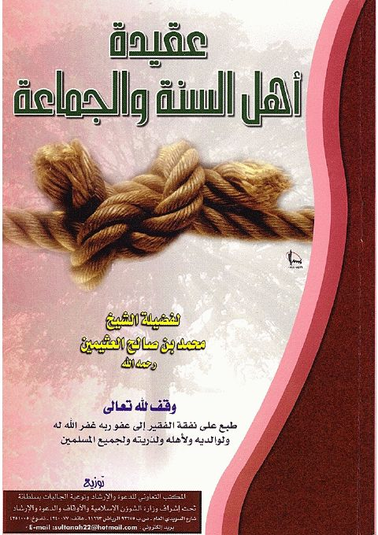

Downloads need an internet connection.
عقيدة أهل السنة والجماعة
Authors: محمد بن صالح العثيمين
Publishers: المكتب التعاوني للدعوة والإرشاد بسلطانة
**▫️ العنوان: عقيدة أهل السنة والجماعة** ▪️ المؤلف: #محمد_بن_صالح_العثيمين ▫️ الناشر: #المكتب_التعاوني_للدعوة_والإرشاد_بسلطانة ▪️ تاريخ النشر: 1422هـ ▫️ بلد النشر: الرياض، #السعودية ▪️ الطبعة: 4 ▫️ عدد الأجزاء: 1 ▪️ الصفحات: 55 ▫️ نوع الوعاء: #كتاب ▪️ التصنيف الرئيسي: #العقيدة_والمذاهب_والأديان ▫️ التصنيف الفرعي: #عقيدة_أهل_السنة ۪